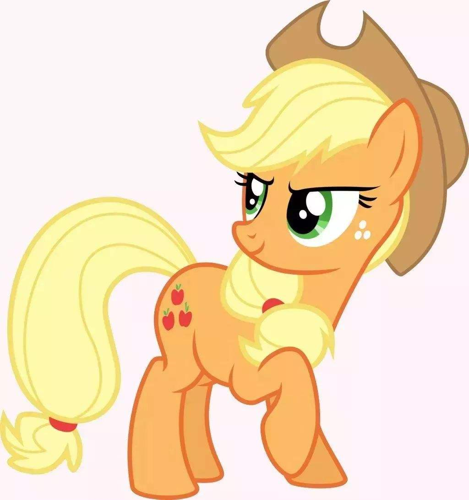
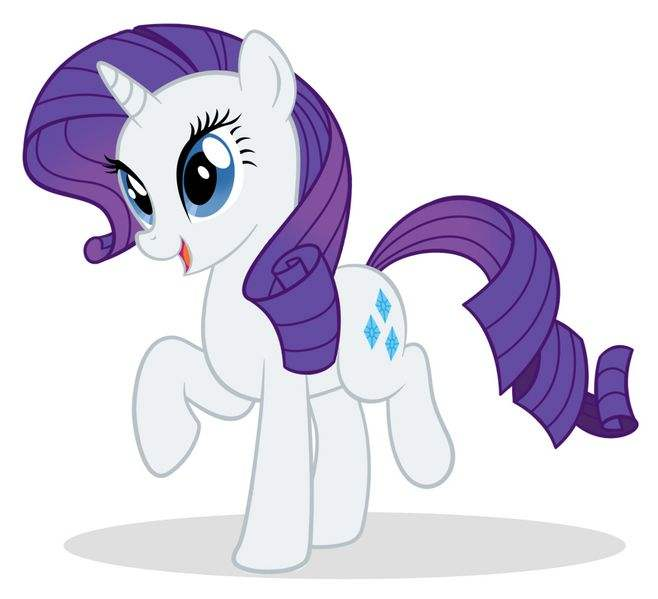
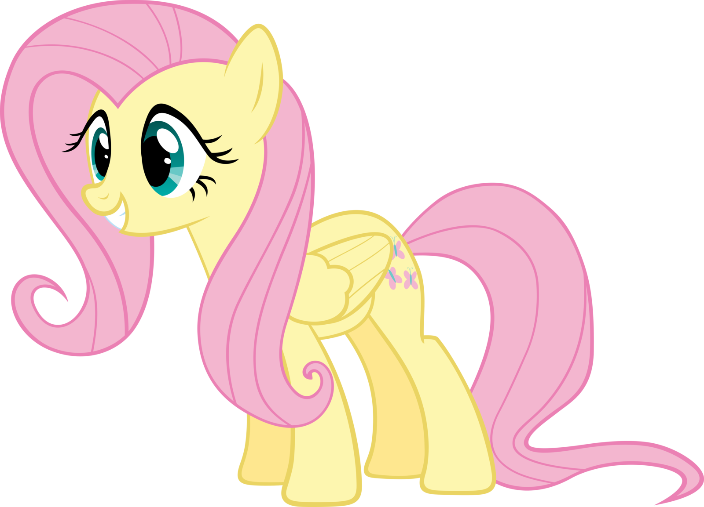
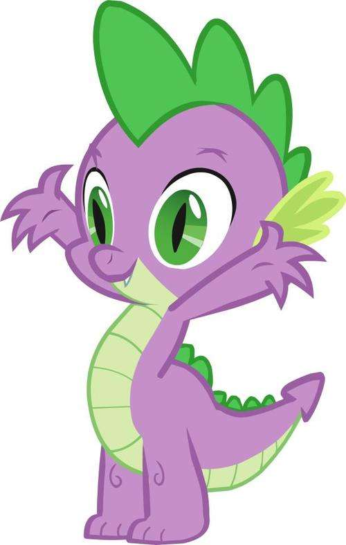
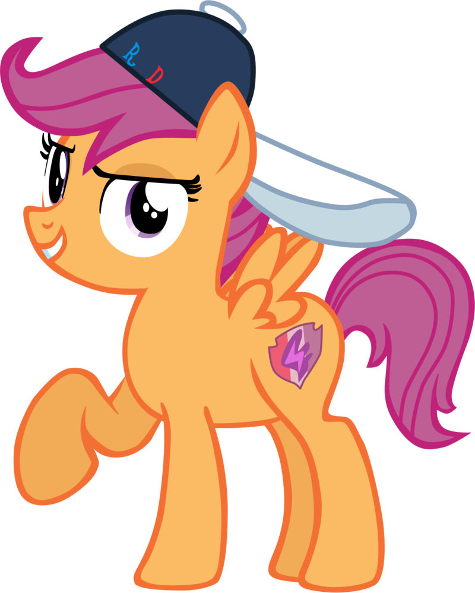
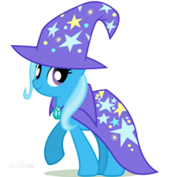
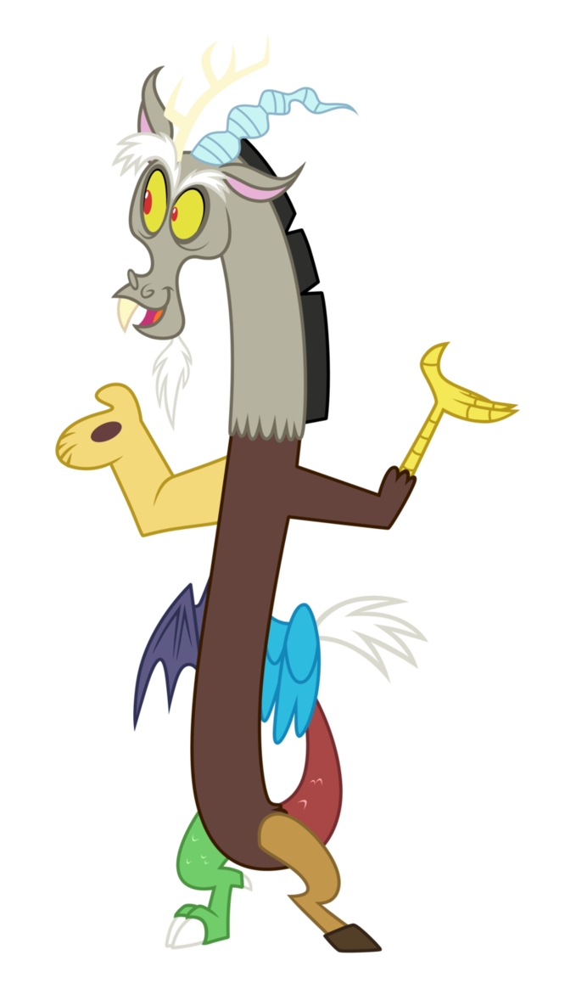

Twilight Sparkle is the central protagonist of the series. She is a purple alicorn. Her Cutie Mark is a pink hexagonal star with a white large hexagonal star inside, surrounded by five white small hexagonal stars, it represents her talent for magic and love for astronomy.

Rainbow Dash is a blue pegasus with a rainbow-colored mane and tail. Her Cutie Mark is a cloud with a rainbow of lightning underneath, it represents her athleticism and obsession with speed and adventure.

Applejack is an orange, blonde-haired earth pony. Her Cutie Mark is three apples, it represents her talent for agriculture and love for her family.
Rarity is a white unicorn with a curled violet mane. Her Cutie Mark is three blue diamonds, it represents her talent for prospecting gemstones and her love of art and beauty.
Fluttershy is a yellow pink-maned pegasus. Her Cutie Mark is three pink butterflies, it represents her love of nature and talent as an animal caretaker.
Pinkie Pie is a pink earth pony. Her Cutie Mark is one yellow ballon between two blue ballons, it represents her talent for spreading hope and joy, and her desire to entertain her friends.

Spike is a purple baby dragon with green spines. He fulfills the role of Twilight's "number one assistant" to which he is named so for his loyalty and skill at helping Twilight solve problems and learn lessons.
Starlight Glimmer is a unicorn.

Princess Celestia is a white alicorn with a flowing, multicolored mane and tail and Equestria's benevolent ruler.

Princess Luna, also named "Selena" in earlier drafts, is a dark blue alicorn and Princess Celestia's younger sister.

Princess is a kind alicorn. She is Princess Celestia's adopted niece and Twilight's childhood "foal-sitter"

Shining Armor is unicorn. He is the captain of Canterlot's royal guard who has a close relationship with his sister and is nicknamed her "Big Brother Best Friend Forever" (B.B.B.F.F.). He is also the husband of Princess Cadance.

Flurry Heart is a alicorn. She is the daughter of Princess Cadance and Shining Armor.

Apple Bloom is a yellow earth pony filly with a red mane and a pink mane bow.

Sweetie Belle is a "sweet-natured and sometimes spacey" unicorn filly with a white coat and a lavender and pink-striped mane.

Scootaloo is an orange pegasus filly with a purple mane.
Big McIntosh, commonly called Big Mac, is a large earth pony who is Applejack and Apple Bloom's older brother.

Trixie is a unicorn.
Diamond Tiara is an earth pony.

Silver Spoon is an earth pony.

Discord is a "draconequus", which is a serpentine being with a pony's head and numerous different animal parts.
